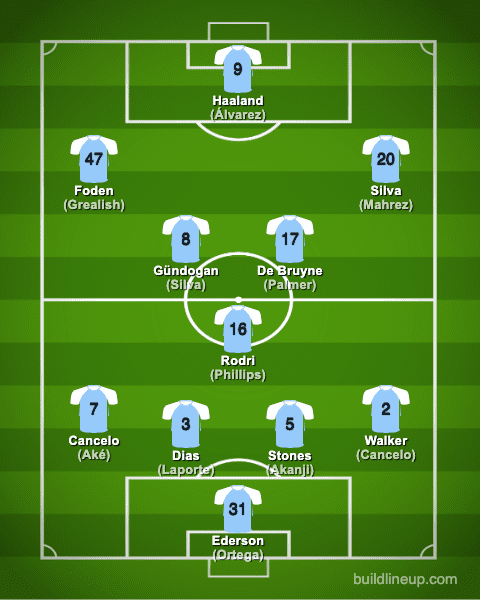
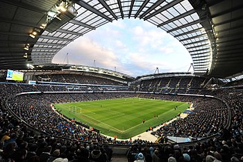
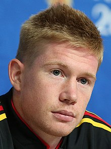
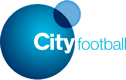

Manchester City Football Club are an English football club based in Manchester that competes in the Premier League,
the top flight of English football. Founded in 1880 as St. Mark's (West Gorton),
they became Ardwick Association Football Club in 1887 and Manchester City in 1894.
The club's home ground is the Etihad Stadium in east Manchester, to which they moved in 2003,
having played at Maine Road since 1923. Manchester City adopted their sky blue home shirts in 1894,
in the first season with the current name. Over the course of its history, the club has won eight league titles,
six FA Cups, eight League Cups, six FA Community Shields, and one European Cup Winners' Cup.
Formation

4-3-3 : 30Matches：W:23 D:4 L:3 / 71：18
4-2-3-1 : 8Matches：W:6 D:2 L:0 / 28：8
Etihad Stadium

The City of Manchester Stadium in east Manchester,
known as the Etihad Stadium since 2011 for sponsorship reasons, is on a 200-year lease from Manchester City Council to Manchester City.
It has been the club's home since the end of the 2002–03 season, when City moved from Maine Road.
Before moving to the stadium, the club spent in excess of £30 million to convert it to football use: the pitch was lowered,
adding another tier of seating around it, and a new North Stand was constructed.
The inaugural match at the new stadium was a 2–1 win over Barcelona in a friendly match.
A 7,000-seat third tier on the South Stand was completed in time for the start of the 2015–16 football season,
increasing the stadium's capacity to 55,097. A North Stand third tier is in development, potentially increasing capacity to around 61,000.
Pep Guardiola
Josep "Pep" Guardiola Sala is a Spanish professional football manager and former player,
who is the current manager of Premier League club Manchester City.
He is considered one of the greatest managers of all time and holds the records for the most consecutive league games won in La Liga,
the Bundesliga and the Premier League.
Guardiola was a defensive midfielder who usually played in a deep-lying playmaker's role.
He spent the majority of his career with Barcelona, forming a part of Johan Cruyff's Dream Team that won the club's first European Cup in 1992,
and four successive Spanish league titles from 1991 to 1994. He captained the team from 1997 until his departure from the club in 2001.
Guardiola then had stints with Brescia and Roma in Italy, Al-Ahli in Qatar, and Dorados de Sinaloa in Mexico.
He was capped 47 times for the Spanish national team and appeared at the 1994 FIFA World Cup, as well as at UEFA Euro 2000.
He also played friendly matches for Catalonia.
Kevin De Bruyne

Kevin De Bruyne (born 28 June 1991) is a Belgian professional footballer who plays as a midfielder
for Premier League club Manchester City and the Belgium national team. He is widely regarded as one of the best players in the world.
Pundits have often described him as a "complete footballer".
De Bruyne began his career at Genk, where he was a regular player when they won the 2010–11 Belgian Pro League.
In 2012 he joined English club Chelsea, where he was used sparingly and then loaned to Werder Bremen.
He signed with Wolfsburg for £18 million in 2014, where he established himself as one of the best players in the
Bundesliga and was integral in the club's 2014–15 DFB-Pokal win. In the summer of 2015 De Bruyne joined Manchester City for a club record £54 million.
He has since won four Premier League titles, five League Cups and an FA Cup with the club.
In 2017–18 he had a significant role in Manchester City's record in becoming the only Premier League team to attain 100 points in a single season.
In 2019–20, De Bruyne equalled the record for most assists in a Premier League season and was awarded Player of the Season (which he won again in 2021–22).
City Football Group

City Football Group Limited (CFG) is a holding company that administers association football clubs.
The group is owned by three organisations; of which 81% is majority owned by Newton Investment and Development LLC,
18% by the American firm Silver Lake and 1% by Chinese firms China Media Capital and CITIC Capital.
The group derives its name from Manchester City F.C.,
its flagship football club and acts as the club's parent company.
CFG also owns stakes in clubs in the United States, Australia, India, Japan, Spain, Brazil, Uruguay, China, Belgium, France and Italy.